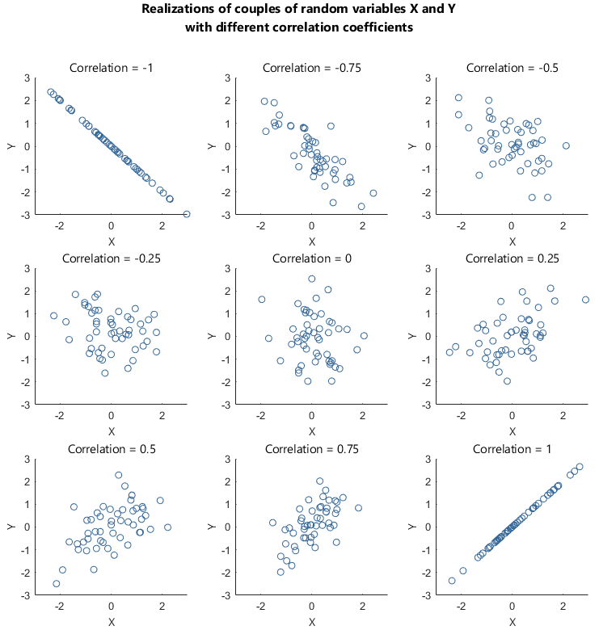

graph LR A[X] --> B[Y]
DATA 202 - Week 8
Notes on causal theories
Review of Week 7 code
Part I: Context
The great masses of people are determined to end the exploitation of their races and land. They are awake and moving toward their goal like a tidal wave. You can hear them rumbling in every village street, on the docks, in the houses, among the students, in the churches, and at political meetings. - Martin Luther King, Jr., Nobel Lecture, December 1964
History, cause, and effect
Theory is often understood through an investigation of both the literature and the historical contexts surrounding a given issue. Take, for example, the legacies of colonization. As data and scientific developments expand into new fields, new questions arise as to what we can associate and how we understand these associations. For example, how does one theoretically relate a series of events from 150 years ago to a present set of conditions? What are the possibilities? What are the limitations? What are the cautionary tales?
Statistics was situated as a vehicle to understand and measure observations. As it becomes an ever popular vehicle to inform social justice discourses, the many real-world associations identified in society bring to mind the well-known and readily available cautionary tale:
Correlation does not imply causation.
This popular statement relates to the ability (or inability) to deduce cause-and-effect relationships.
Correlation
In the traditional setting, correlation is framed as a statistical measure that relays the size and direction of the relationship between two or more variables. From a more critical framework, however, the idea of associations between variables and the attribution of relationships between variables must be both examined and interrogated.
Associations should be understood and initiated from the root of a theoretical framework.
If two variables are related, in a statistical context, we assume that their values change in some ordered fashion. These measures are often represented on an axis depicting the strength of the association.

As one value of a first variable increases the other variable’s values may also increase (positive relationship). Alternatively, as the value of one variable increases the other variable’s values may decrease (negative relationship). Key questions to consider focus on how context and other factors shape any seeming bivariate relationship.
Spurious correlation
At the intersection of mathematics and statistics is the concept of the spurious correlation (Ward, 2013). A few examples:
Divorce rate has been found to correlate with margarine use.
Ice cream sales have been correlated with:
Swimming deaths
Shark attacks
Crime rates
The use of the popular site Facebook has been correlated with diminished well-being.
These association help us see the need to investigate relationships further. What are possible unexplained relationships in these associations? We identify potential spurious variables when developing theoretical ideas about associations.
Causation
Causality (See Sloman and Acnado (2015)) is a representation and principle of cause and effect. There are many different viewpoints of causation across disciplines and fields of study. Terminology matters in how one frames cause and effect.
There are four possible relationships between two variables:
X causes Y
Y causes X
X and Y are both caused by Z
X is not related to Y
While these relationships may exist in some combination, it is important to frame their differences.
Associating X and Y
Our initial framing might directly link the variables X and Y.
First, we have the association X causes Y.
Next, we have the association Y causes X.
graph LR A[Y] --> B[X]
Finally, we have the association X causes Y and Y causes X.
graph LR A[X] <--> B[Y] B --> A
Framing spurious relationships
However, after further reading, we may find that we need to integrate a third factor Z.
In this context, a third factor (the “third-cause fallacy”) represents a spurious relationship.
graph LR A[X] B[Y] C[Z]
Spurious relationships denote an observed or hypothesized association.
There are important differences in how we depict and deal with third factor associations.
Confounding variables
Confounding is a causal concept that focuses on spurious or distorted associations.
Below, Z is considered a confounding variable.
graph TD A[Z] --> B[X] A --> C[Y]
Z is related to both the independent, \(X\), and dependent, \(Y\), variables in the causal sense.
Your analysis should examine if the relationship between \(X\) and \(Y\) holds.
These interactions are described as spurious associations.
Mediating variables
A mediating variable explains the process by which two variables are related.
graph LR A[X] --> B[Z] B --> C[Y]
- Z provides the mechanism to relate the independent, \(X\), and dependent, \(Y\), variables.
Moderating variables
A moderating variable explains the strength by which two variables are related.
graph LR A[X] --> B[Z] A --> C[Y] B --> C
- Z explains the strength of association between the independent, \(X\), and dependent, \(Y\), variables.
Real-world associations

Let us look at a more concrete example. Imagine you read or hear the statement:
“In the U.S., Black drivers are more likely to be pulled over by police than white drivers.”
This statement represents a complex relationship that requires history and context to inform analysis.
Racial profiling has been an issue in the U.S. for centuries.
U.S. police are deployed at higher rates in some poor and Black neighborhoods.
What data and evidence do you think is needed to confirm if the statement is accurate? Moreover, what measures and statistical tests would allow us to integrate history and context? What variable associations might be used to assess these relationship?
Part II: Content
A guiding example
Let us return to an example mentioned last week: the yahoo_data in the critstats package. This data comes from a Yahoo! News Race and Justice poll.
A complete description of the data set is as follows:
Results from a Yahoo! News poll conducted by YouGov on May 29-31, 2020. In total 1060 U.S. adults were asked a series of questions regarding race and justice in the wake of the killing of George Floyd by a police officer. Results in this data set are percentages for the question, “Do you think Blacks and Whites receive equal treatment from the police?” For this particular question there were 1059 respondents.
A guiding example
Let us begin with a summary of responses to a survey sparked by the killing of George Floyd.
| Response | Total |
|---|---|
| No | 700 |
| Yes | 236 |
The study sample \(n = 936\). Please take note of the table’s footnote.
As of now, we know very little about the survey (i.e., the context has been stripped away).
An initial question
Is there a difference in the survey responses?
Framing proportions
As you learn about hypothesis testing, you want to understand the nature of variable associations. There are many approaches to how we measure associations. One we’ll explore extensively is differences in proportions of two dichotomous variables.
First, we add a third column to our table by computing the proportion in each row:
\[ P(No) = \frac{\text{Number of respondents who replied No}}{n} \]
\[ P(Yes) = \frac{\text{Number of respondents who replied Yes}}{n} \]
Understanding proportions
| Response | Total | Proportion |
|---|---|---|
| No | 700 | \(0.7478\) |
| Yes | 236 | \(0.2522\) |
So we have \(P(No) = 0.7478\) and \(P(Yes) = 0.2522\).
This is a sample. Be mindful of the notes about sampling and sampling error.
What can these proportions tell us about the data?
A closer look
Let’s look at a preview panel of the full data set.
| ID | Race | Response |
|---|---|---|
| 1 | White | Yes |
| 2 | White | Yes |
| . | . | . |
| 773 | Black | Yes |
| 774 | Black | Yes |
| .. | .. | .. |
| 874 | Hispanic | Yes |
| 875 | Hispanic | Yes |
| … | … | … |
| \(1059\) | Other | Not sure |
When we format the data into tables, there are multiple categories to consider.
In the table below, the race variable is listed in rows.
| Race | No | Yes |
|---|---|---|
| Black | Black \(\cap\) No | Black \(\cap\) Yes |
| Hispanic | Hispanic \(\cap\) No | Hispanic \(\cap\) Yes |
| Other | Other \(\cap\) No | Other \(\cap\) Yes |
| White | White \(\cap\) No | White \(\cap\) Yes |
Recall that the \(\cap\) represents “and” while the \(\cup\) represents “or” in logic.
In the table below, the response variable is listed in rows.
| Response | Black | Hispanic | Other | White |
|---|---|---|---|---|
| No | No \(\cap\) Black | No \(\cap\) Hispanic | No \(\cap\) Other | No \(\cap\) White |
| Yes | Yes \(\cap\) Black | Yes \(\cap\) Hispanic | Yes \(\cap\) Other | Yes \(\cap\) White |
We use our understanding of probability to generate a reconstruction for the response ‘No’.
\[ P(No) = \dfrac{\text{No} \cap \text{Black}}{n} + \dfrac{\text{No} \cap \text{Hispanic}}{n} + \dfrac{\text{No} \cap \text{Other}}{n} + \dfrac{\text{No} \cap \text{White}}{n} \]
We generate a parallel construction for the response ‘Yes’.
\[ P(Yes) = \dfrac{\text{Yes} \cap \text{Black}}{n} + \dfrac{\text{Yes} \cap \text{Hispanic}}{n} + \dfrac{\text{Yes} \cap \text{Other}}{n} + \dfrac{\text{Yes} \cap \text{White}}{n} \]
Summary values
Adding values to the table will give us a more complete picture of the data.
| Response | Black | Hispanic | Other | White |
|---|---|---|---|---|
| No | 92 | 75 | 47 | 486 |
| Yes | 6 | 15 | 14 | 201 |
Use the table to calculate Response probabilities:
| Response | Black | Hispanic | Other | White | Total |
|---|---|---|---|---|---|
| No | 92 | 75 | 47 | 486 | 700 |
| Yes | 6 | 15 | 14 | 201 | 236 |
Gather response probabilities for No by dividing each cell by the sample size.
\[ P(No) = \dfrac{92}{936} + \dfrac{75}{936} + \dfrac{47}{936} + \dfrac{486}{936} = \dfrac{700}{936} = 0.7478 \] Gather response probabilities for Yes by dividing each cell by the sample size.
\[ P(Yes) = \dfrac{6}{936} + \dfrac{15}{936} + \dfrac{14}{936} + \dfrac{201}{936} = \dfrac{236}{936} = 0.2522 \] We will use this framing to compute proportions for each cell but in R.
Given that we want to explore the data in more detail and understand any base associations, we need to revisit our framing and consider some additional tasks.
Returning to the framework
A basic analysis goes a long way in determining our next steps.
With this base analytic exercises, you may want to ask: What is the research question?
What are the main or primary theoretical constructions?
First, examine the literature and annotate specific citations.
Next, construct a framework for the various interpretations.
What are the similarities across theoretical constructions?
What are the main differences across theoretical constructions?
How does a nuanced view of the history of the issue improve our understanding?
Based on your background analyses, what is the hypothesis?
Part III: Code
Setting things up
As a general rule, always load the appropriate libraries at the start of your analyses.
# load our libraries
library(critstats)
library(tidyverse)
library(descr)
library(Hmisc)In this case:
critstatscontains theyahoo_datathat we’d like to analyze.tidyversecontains the set of functions to help us work with our datadescrandHmisccontain useful functions to analyze social science data.
If you receive an error, you may need to use the install.packages() commands first.
Load the data
Inspect the data documentation and contents of the data.
# access the yahoo_data
??yahoo_data
yahoo_data # "Do you think Blacks and Whites receive equal treatment from the police?"While the specific wording of the question may not fit our theoretical framing (e.g. Blacks and Whites), it is useful to consider what information and insights can be gathered from the data.
Here, theory and the literature become important components to outlining your analytic plan.
Clean your data
The data in the yahoo_data set is already cleaned and prepped. However, when you conduct your own analyses, you will need to follow the series of steps outlined in previous assignments. For example, Lab 1 is a great resource on cleaning.
Understand your data
Given that we are analyzing categorical data, we will create a series of tables.
These tables will allow us to gather a sense of the data.
Our first table will be of the variable race_eth.
# create a table of the race_eth
table(yahoo_data$race_eth)
Black Hispanic Other White
101 104 82 772 What do you notice? What do you wonder?
Understand your data
Our second table will be of the variable response.
# create a table of the race_eth
table(yahoo_data$response)
No Not sure Yes
700 123 236 What do you notice? What do you wonder?
Modify your data
Make the necessary modifications to your data.
Here I set the yahoo_data to df and rename the race_eth variable.
df <- yahoo_data # set the yahoo_data to df
df <- df %>%
rename("race" = "race_eth") # rename the race_eth variable to raceGet the sample size
When looking at the table, it may be useful to get a sense of the proportions.
We’ll begin with getting the sample size.
# get a quick count of the sample size
count(df) # the count function can collect the sample size, n, of a tibble# A tibble: 1 × 1
n
<int>
1 1059The tables give us the frequency of each category.
The sample size will help us get the relative frequency of each category.
Relative frequencies by race
Get the relative frequencies for the race variable.
df %>%
count(race) %>%
mutate(prop = prop.table(n))# A tibble: 4 × 3
race n prop
<chr> <int> <dbl>
1 Black 101 0.0954
2 Hispanic 104 0.0982
3 Other 82 0.0774
4 White 772 0.729 Relative frequencies by response
Get the relative frequencies for the response variable.
df %>%
count(response) %>%
mutate(prop = prop.table(n))# A tibble: 3 × 3
response n prop
<chr> <int> <dbl>
1 No 700 0.661
2 Not sure 123 0.116
3 Yes 236 0.223Generate a crosstab of race and response
crosstab(df$response, df$race, plot=F) Cell Contents
|-------------------------|
| Count |
|-------------------------|
=======================================================
df$race
df$response Black Hispanic Other White Total
-------------------------------------------------------
No 92 75 47 486 700
-------------------------------------------------------
Not sure 3 14 21 85 123
-------------------------------------------------------
Yes 6 15 14 201 236
-------------------------------------------------------
Total 101 104 82 772 1059
=======================================================What do you notice? What do you wonder?
Set plot=T if you want to see a visual plot of the data.
Standardize the frequencies
Raw frequencies can be hard to read in a crosstab, especially since column totals are not equal.
Add prop.c = T to get column percentages
crosstab(df$response, df$race, plot=F, prop.c=T) Cell Contents
|-------------------------|
| Count |
| Column Percent |
|-------------------------|
=======================================================
df$race
df$response Black Hispanic Other White Total
-------------------------------------------------------
No 92 75 47 486 700
91.1% 72.1% 57.3% 63.0%
-------------------------------------------------------
Not sure 3 14 21 85 123
3.0% 13.5% 25.6% 11.0%
-------------------------------------------------------
Yes 6 15 14 201 236
5.9% 14.4% 17.1% 26.0%
-------------------------------------------------------
Total 101 104 82 772 1059
9.5% 9.8% 7.7% 72.9%
=======================================================We also refer to crosstabs as contingency tables; the percentages provide conditional probabilities.
What do you notice? What do you wonder?
Hypothesis testing with crosstab
Develop (or refine) your research question(s).
Examining the relationship between two variables.
# research inquiry: is there a relationship between the race and response variables?
# data: survey results from the Yahoo! News race and justice poll
# note(s): response contains three levels: Yes, No, and Not sureAdd your research inquiry/question to your preamble.
Notes help you remember import information for writing code. You can also put them in-line.
Null and alternative hypothesis for a \(\chi^2\) test are:
\(H_0\): No relationship. The two variables are statistically independent.
\(H_1\): There is a relationship. The two variables are not statistically independent.
Notice that \(H_1\) does not give us information about the direction or strength of the relationships. To test the null hypothesis, we will calculate the \(\chi^2\) statistic:
\[\chi^2 = \sum \dfrac{(O-E)^2}{E}\]
Where
\(O\) is the observed frequency for each cell
\(E\) is the expected frequency for each cell
- The expected frequency is what we’d expected if there is no relationship (\(H_0\) is true)
Create a crosstab with raw frequencies
crosstab(df$response, df$race, plot=F) Cell Contents
|-------------------------|
| Count |
|-------------------------|
=======================================================
df$race
df$response Black Hispanic Other White Total
-------------------------------------------------------
No 92 75 47 486 700
-------------------------------------------------------
Not sure 3 14 21 85 123
-------------------------------------------------------
Yes 6 15 14 201 236
-------------------------------------------------------
Total 101 104 82 772 1059
=======================================================Sampling error
An important note about sampling error
There appears to be a relationship between the variable response and race.
However, the data are from a sample. We do not and should not infer that there is a relationship at the population level, but only for the sample data we are analyzing.
Earlier, we saw the difference in proportions by the column differences for “Yes” and “No”. Since we found that the overall population said “No” to the question of fair treatment, we want to take this into consideration when analyzing our data.
Gather the expected frequencies
crosstab(df$response, df$race,
expected=T, #Add expected frequency to each cell
plot=F) Cell Contents
|-------------------------|
| Count |
| Expected Values |
|-------------------------|
=======================================================
df$race
df$response Black Hispanic Other White Total
-------------------------------------------------------
No 92 75 47 486 700
66.8 68.7 54.2 510.3
-------------------------------------------------------
Not sure 3 14 21 85 123
11.7 12.1 9.5 89.7
-------------------------------------------------------
Yes 6 15 14 201 236
22.5 23.2 18.3 172.0
-------------------------------------------------------
Total 101 104 82 772 1059
=======================================================Add the chi-square contributions
crosstab(df$response, df$race,
expected=T, #Add expected frequency to each cell
prop.chisq = T, #Total contribution of each cell
plot=F) Cell Contents
|-------------------------|
| Count |
| Expected Values |
| Chi-square contribution |
|-------------------------|
=========================================================
df$race
df$response Black Hispanic Other White Total
---------------------------------------------------------
No 92 75 47 486 700
66.8 68.7 54.2 510.3
9.542 0.569 0.957 1.156
---------------------------------------------------------
Not sure 3 14 21 85 123
11.7 12.1 9.5 89.7
6.498 0.305 13.828 0.243
---------------------------------------------------------
Yes 6 15 14 201 236
22.5 23.2 18.3 172.0
12.107 2.885 1.000 4.874
---------------------------------------------------------
Total 101 104 82 772 1059
=========================================================Calculate degrees of freedom
We have \[df_{\chi^2} = (r-1)(c-1)\]
where r = number of rows in the table and c = number of columns in the table
Chi-square critical values
Gather critical value of chi-square
qchisq(.05, 6, lower.tail=F)[1] 12.59159Get the chi-square statistic from R
## get chi-square statistic
chisq.test(df$response, df$race)
Pearson's Chi-squared test
data: df$response and df$race
X-squared = 53.964, df = 6, p-value = 7.5e-10Our focus should be on interpreting the output values.
In the output, you want to examine the following:
Confirm \(\chi^2\) value and degrees of freedom.
Notice more precise information about the p-value
- Use this value to make sense of your research inquiry
Does this p-value make sense statistically and substantively?
describe some initial limitations of analysis
Always close out your analyses with a write up of limitations.
### limitation 1: sampling error
### limitation 2: category reductions
### limitation 3: cases dropped
### limitation 4: chi-square testNext up: Week 9
Footnotes
Respondents who selected ‘Not sure’ on the survey were moved from this analysis.↩︎